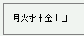
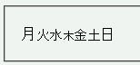

font-size: 100%; という指定が子孫要素に継承されると、文字サイズが小さくなる。
<style type="text/css">
span {
font-size: 100%;
}
</style>
<p>月<span>火<span>水<span>木</span>金</span>土</span>日</p>
月火水木金土日
文字サイズ100%を継承させています。
WinIE6.0での表示
Opera6.05での表示
Opera6.05では不具合の発生が確認されました。Opera7.0では標準・互換モードともに不具合の発生は確認されませんでした。